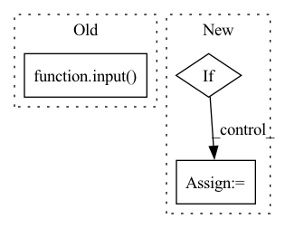

Pattern ID :35569
Before Change
)
print(new_time.shape, original_audio.shape)
input()
// theta_out = self.modules.theta(
// psi_out
// ) // generate classifications from time activationsAfter Change
comp[i], ratio[i] = self.select_component(
i, Xs[0], psi_out[0], nmf_dictionary
)
if pooled_act[0, i] > 0.2:
expl_comp += comp[i]
expl_comp = np.exp(expl_comp) - 1
interpretation = istft((expl_comp * Xs[0]).numpy(), hop_length=512)In pattern: SUPERPATTERN
Frequency: 3
Non-data size: 3
Instances Fragment ID: 101441135
Project Name: speechbrain/speechbrain
Commit Name: 395dd8f124a1e55ccd2e20d90f389f6b8ed4f89c
Time: 2022-11-15
Author: me@francescopaissan.it
File Name: recipes/ESC50/classification/train_interpreter.py
M Class Name: InterpreterESC50Brain
N Class Name: InterpreterESC50Brain
M Method Name: on_stage_end(4)
N Method Name: on_stage_end(4)
M Parent Class: sb.core.Brain
N Parent Class: sb.core.Brain
M File Name: recipes/ESC50/classification/train_interpreter.py
N File Name: recipes/ESC50/classification/train_interpreter.py
M Start Line: 257
M End Line: 324
N Start Line: 257
N End Line: 291
Before Change
" ".join(tokens), max_length=max_length, padding="max_length", truncation=True)
// encode = self.tokenizer.encode_plus(
// " ".join(tokens), padding="max_length", truncation=True)
input( encode)
if labels:
assert len(tokens) == len(labels)
fixed_labels = []
for n, (label, word) in enumerate(zip(labels, tokens)):After Change
fixed_labels = [tmp_padding] * len(self.sp_token_start["input_ids"]) + fixed_labels
fixed_labels = fixed_labels[:min(len(fixed_labels), max_length - len(self.sp_token_end["input_ids"]))]
if self.is_xlnet: // XLNet pad before the sentence
fixed_labels = [tmp_padding] * (max_length - len(fixed_labels) - len(self.sp_token_end["input_ids"])) + \
fixed_labels + [tmp_padding] * len(self.sp_token_end["input_ids"])
else:
fixed_labels = fixed_labels + [tmp_padding] * (max_length - len(fixed_labels)) Fragment ID: 101441134
Project Name: asahi417/tner
Commit Name: 74638a0bada9ad5f05be82f6bf7d70d4019304ab
Time: 2022-08-04
Author: asahi1992ushio@gmail.com
File Name: tner/ner_tokenizer.py
M Class Name: NERTokenizer
N Class Name: NERTokenizer
M Method Name: encode_plus(5)
N Method Name: encode_plus(5)
M Parent Class:
N Parent Class:
M File Name: tner/ner_tokenizer.py
N File Name: tner/ner_tokenizer.py
M Start Line: 103
M End Line: 130
N Start Line: 107
N End Line: 139
Before Change
uuid = start(ld_helper, 40, model_uuids[int(choice)])
print("\n")
print("A new sMCI vs pMCI model has been trained under the tag: {}".format(uuid))
choice = input( "Would you like to evaluate it (Y/n)?")
print("\n")
if (int(choice) == "y" or "Y" or ""):
evaluate_model(device, uuid, ld_helper)
else:After Change
print("model uuid | Time | model task | accuracy | sensitivity | specificity | roc_auc")
model_uuids = fetch_models_from_db()
if not model_uuids == []:
choice = input("Please enter the model number [1, 10] or the uuid that you would like to choose:")
else:
print("\n")
print("No models available. Please train a new model.")
choice = input("Would you like to train a new model[0,1]?: ")
if (int(choice) == 1):
print("Training a new NC vs AD model.") Fragment ID: 101441137
Project Name: mcspooder/camull_net
Commit Name: e7932133ad962f30ee5d65204640589e4ae65ffe
Time: 2022-05-21
Author: danny@remy.localdomain
File Name: camull_cli.py
M Class Name: AnonimousClass
N Class Name: AnonimousClass
M Method Name: transfer_learning(1)
N Method Name: transfer_learning(1)
M Parent Class:
N Parent Class:
M File Name: camull_cli.py
N File Name: camull_cli.py
M Start Line: 117
M End Line: 138
N Start Line: 117
N End Line: 133